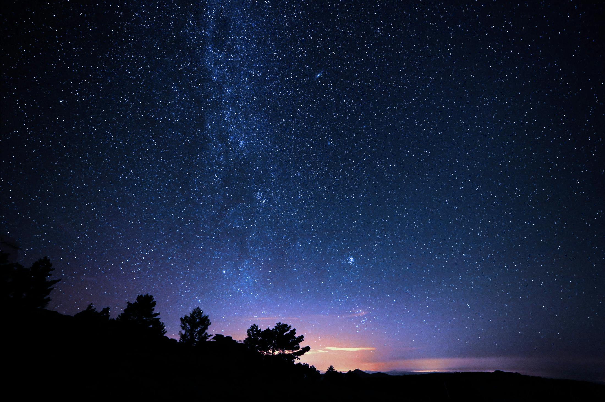
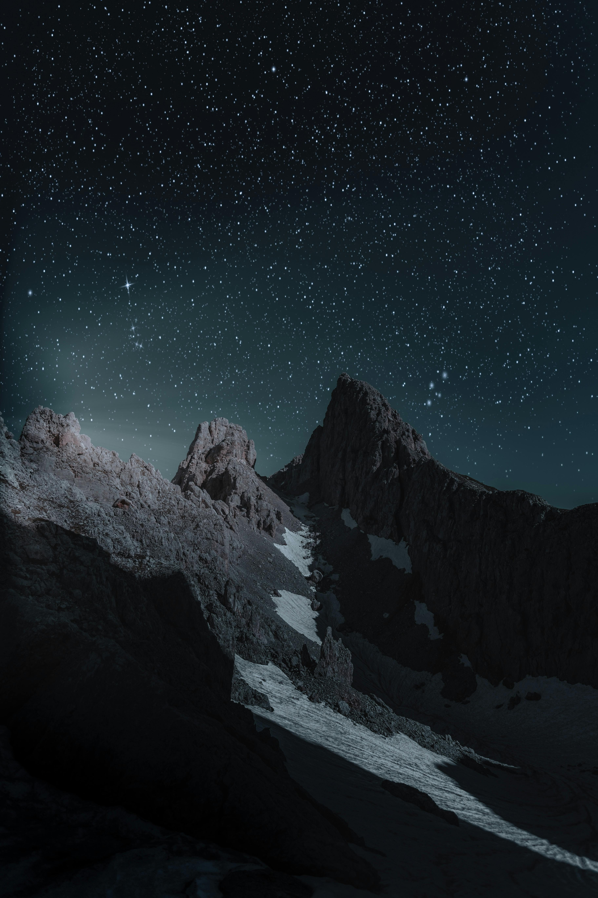
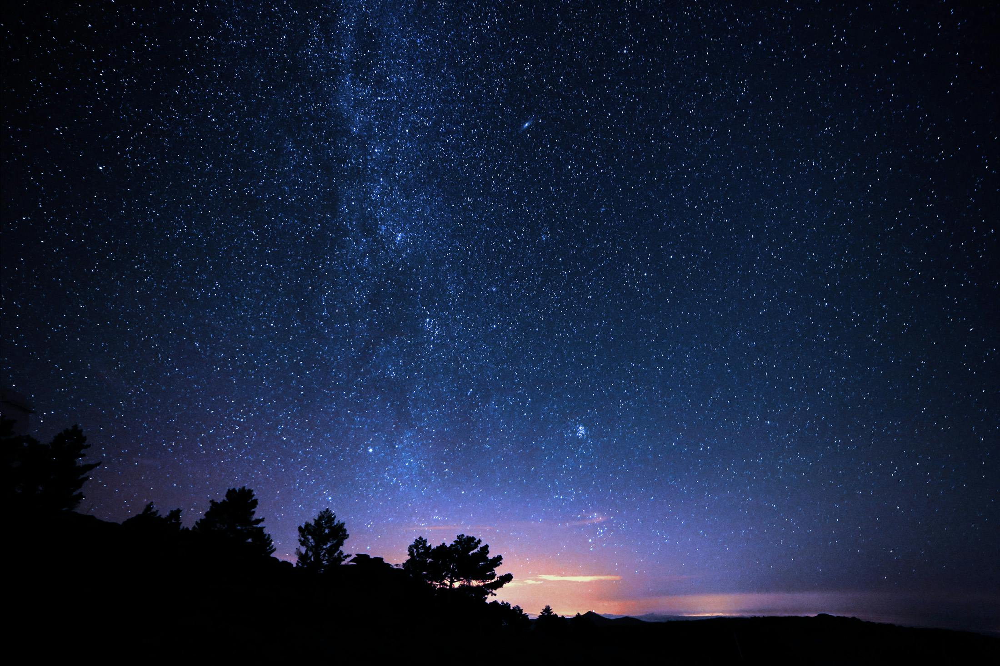
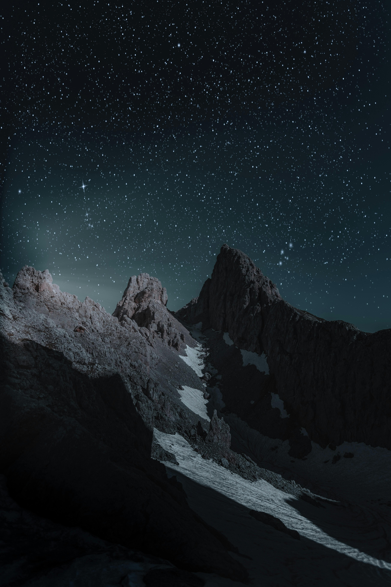
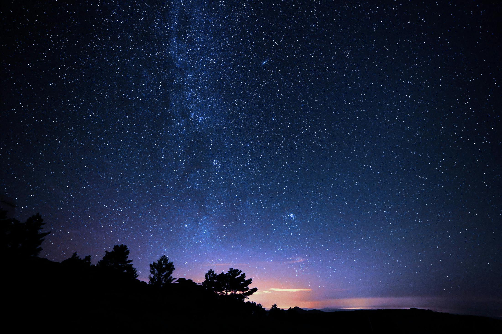
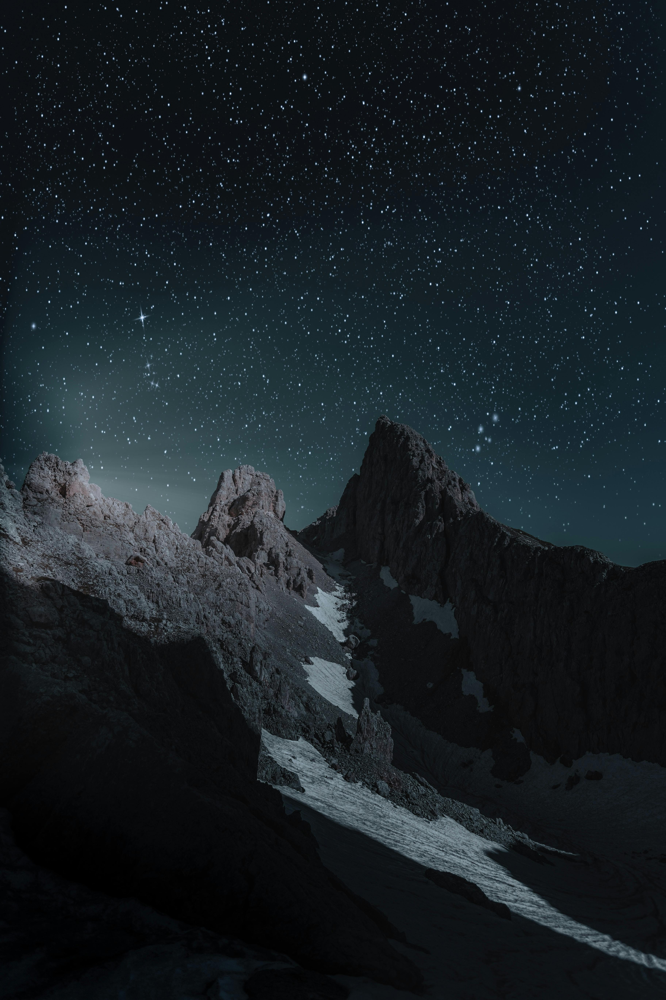

Fotos
Bem-vindo à galeria de fotos de astronomia! Explore imagens incríveis do universo, desde planetas e estrelas até galáxias distantes e fenômenos cósmicos fascinantes.

 





Bem-vindo à galeria de fotos de astronomia! Explore imagens incríveis do universo, desde planetas e estrelas até galáxias distantes e fenômenos cósmicos fascinantes.

